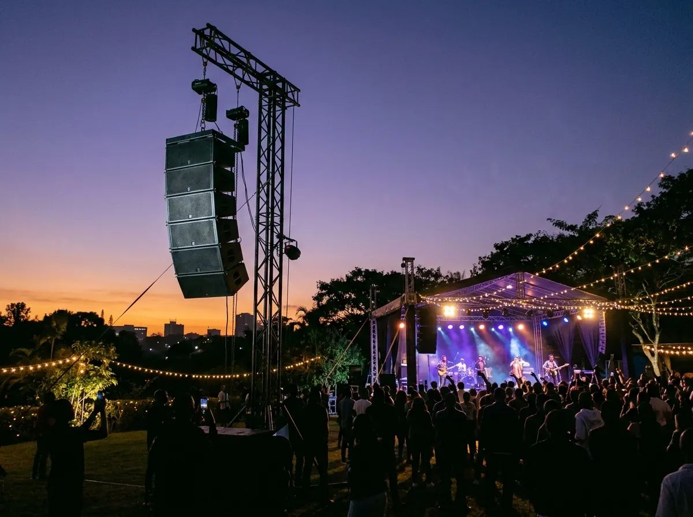
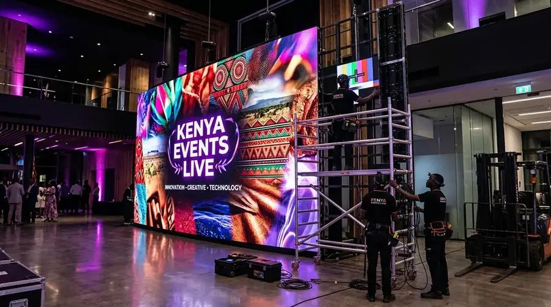
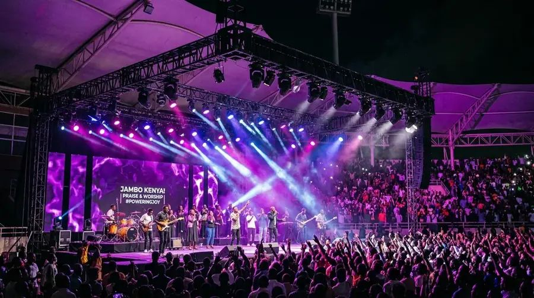
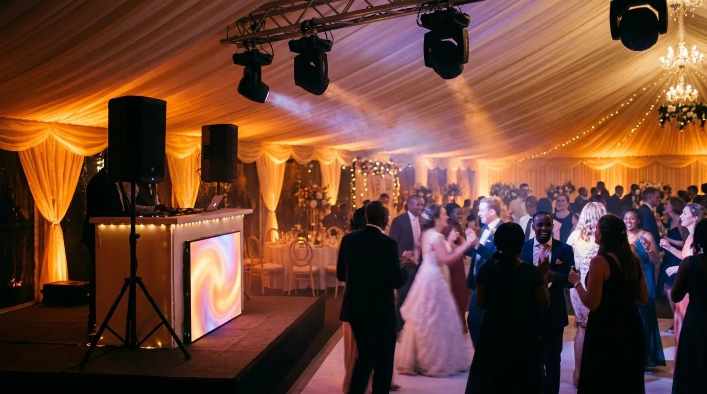
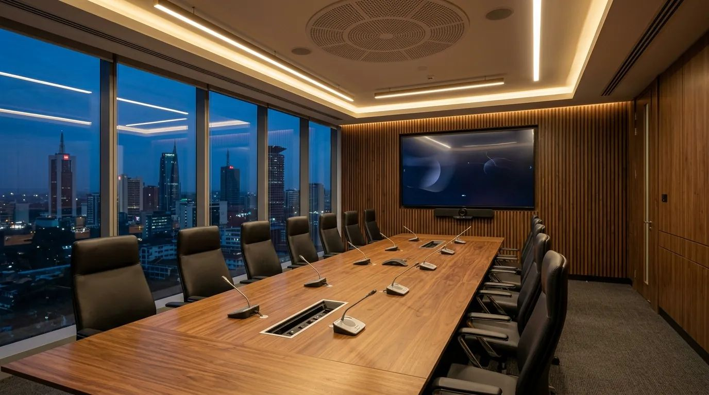
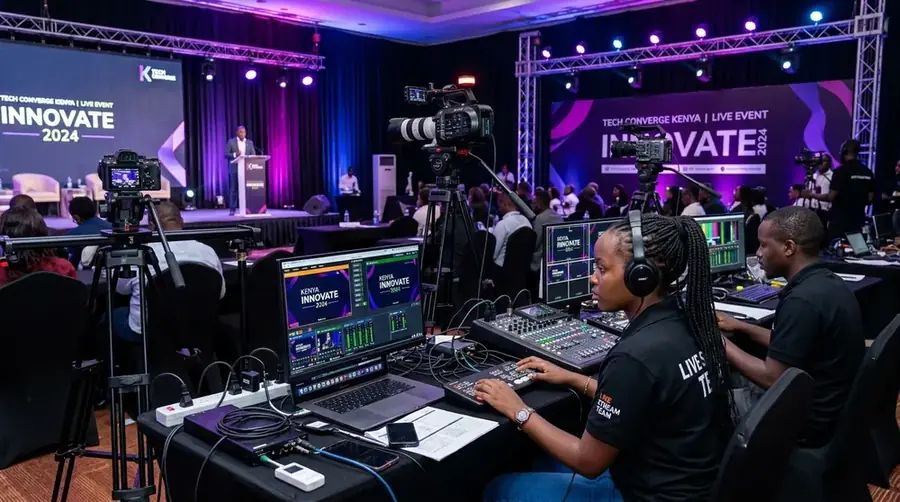
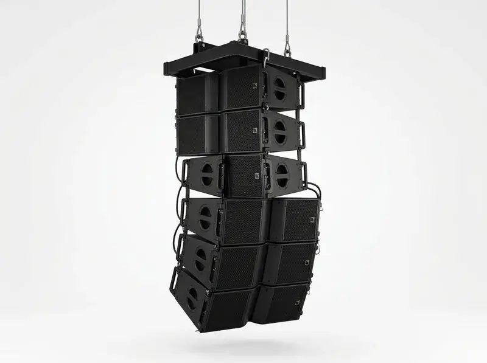
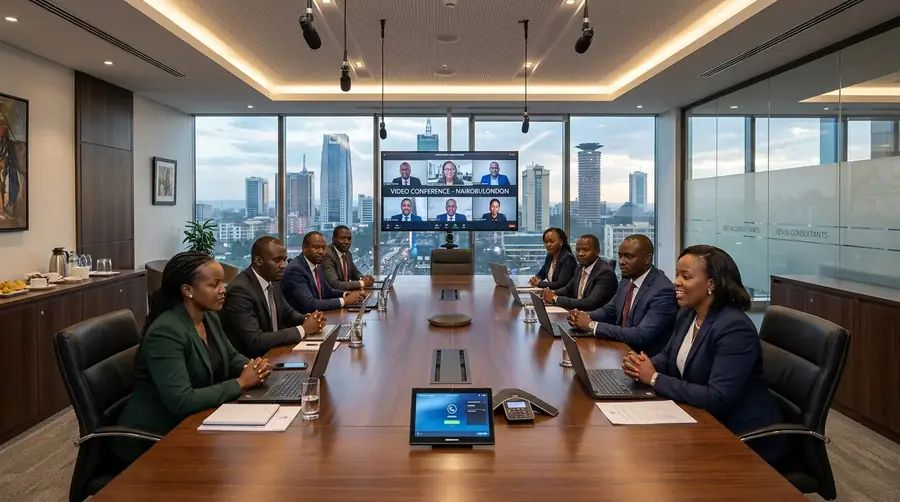
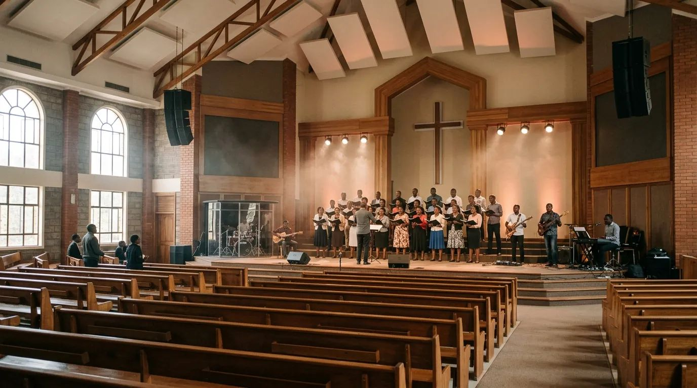
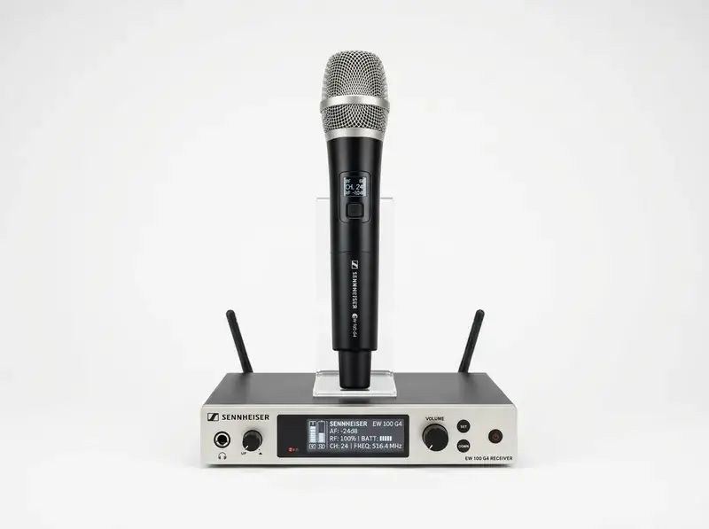

Company Profile 2026
Sound. Vision. Acoustics. Engineered.
Professional audio, acoustics, LED, conferencing and lighting systems, designed, installed and supported across Kenya and East Africa.
Head officeGround Floor, Mpaka Plaza, Mpaka Road, Westlands, Nairobi
Call / WhatsApp+254 182 942 946
info@vtechaudio.co.ke
Onlinevtechaudio.co.ke
Contents
One partner.
Every AV discipline.
VTECH Audio Visual Solutions is a Nairobi-based audio visual integrator. We take full responsibility for the result, from the first site survey through design, supply, installation, commissioning, training and years of support.
- About VTECH 03
- Our promises & why VTECH 04
- What we do 05
- 01 Professional audio solutions 06
- 02 Acoustics, engineered 07
- 03 Video, conferencing & lighting 08
- Our expertise in action 09
- How we work & who we serve 10
- Featured project 11
- Project portfolio: case studies 12
- Houses of worship 14
- Brands & references 15
- Company information 16
- Contact 17
Design-ledEvery project begins with a free site survey and a written technical design for your room, audience and budget.
Fixed quotesClear, itemised quotations within 24 hours in Nairobi and 48 hours upcountry. No surprise costs.
NationwideTechnicians covering all 47 counties, select East Africa projects and 12 months of support on every installation.
42+Installations delivered
47Counties served
24hFixed quote turnaround
12moSupport on every install
About VTECH
We make spaces sound, look and work the way they should.
A Nairobi audio visual integrator designing, installing and supporting sound, video and lighting for organisations across Kenya and East Africa. Engineered to international standards, delivered with local expertise.
Who we are
One accountable partner, from first survey to years of support
Founded and headquartered in Nairobi, VTECH is a full-service integrator serving churches, hotels, schools and universities, corporates, government, healthcare, media houses and event organisers.
Our engineers specify equipment from leading global manufacturers and install to recognised standards for acoustics, electrical safety and signal integrity, while designing for the realities of the region: power conditions, room types, budgets and timelines.
We are a systems integrator, not a box-shifter. We are accountable for the result: even coverage, clear speech and reliable operation, not just the equipment on the invoice.
Our missionTo give every church, boardroom, classroom and venue in East Africa audio visual that is clear, dependable and simple to use, designed properly, installed cleanly and supported for years.
- Design, supply, installation and support under one roof
- Fixed, itemised quotes with no hidden costs
- Technicians covering all 47 counties, with select projects across East Africa
What we stand for
Four promises we keep on every project
01Engineering integrity
Systems designed to international standards, not shortcuts. We measure, specify and document every install.
02Transparent pricing
Fixed written quotes within 24 hours of a free site survey. No hidden costs, no surprises.
03Local accountability
A Kenyan team you can reach, with nationwide coverage and support across East Africa.
04Long-term partnership
Every project includes a 12-month support window and optional annual maintenance contracts.
Why organisations choose VTECH
Design-led engineering
Every project starts with a free site survey and a written technical design matched to your room, audience and budget.
Fixed quotes in 24 hours
Clear, itemised pricing within 24 hours in Nairobi and 48 hours upcountry.
Trusted pro-audio brands
dB Technologies, Shure and leading LED, lighting and conferencing brands, supplied with genuine warranties.
Support across Kenya
12 months of support on every installation, maintenance contracts and technicians in all 47 counties.
What we do
Complete audio visual solutions
From boardrooms in Nairobi to auditoriums nationwide: one integrator for design, supply, installation and support.

Professional sound systems
Line arrays, PA systems and mixing tuned for churches, halls, stadiums and events.

Acoustic design and soundproofing
Room acoustics, treatment and sound isolation for clean, clear audio.

LED screens and video walls
Indoor and outdoor LED display supply, installation and content.

Conference and boardroom systems
Delegate microphones, room automation and one-touch meeting rooms.
Video conferencing
Cameras, audio and displays for hybrid meetings that just work.

Stage and architectural lighting
Event and permanent lighting design, rigging and control.

Digital signage
Indoor and outdoor signage and professional display networks.

Event equipment hire
Sound, lighting, LED and conferencing hire with setup and an on-site technician.

AV consultation and system design
Free site survey, needs analysis and a tailored technical design and quotation.
Maintenance and support
12 months of support on every installation, plus annual maintenance contracts.
Solution pillar 03
Video, conferencing & lighting.
Displays that everyone can read, meeting rooms that work at the press of a button and lighting that makes every stage look its best, integrated with your sound into one system.
LED screens and video walls
Indoor and outdoor LED supply, installation and content for events, worship, retail and corporate.
Conference and delegate systems
Discussion microphones, recording and streaming for boardrooms, assemblies and halls.
Video conferencing
Hybrid meeting rooms with cameras, audio and displays that are simple to run.
Stage and architectural lighting
Event and permanent lighting design, rigging and control.

Broadcast and live streaming
Studio sound, lighting and multi-camera streaming for media houses and churches.
Digital signage
Indoor and outdoor signage and professional display networks.
Planning toolOur free online AV Planner at vtechaudio.co.ke/av-planner helps you estimate LED screen size and pixel pitch and plan a boardroom before the site survey.
Our expertise in action
Comprehensive deliverables for every project
Every VTECH project is documented and handed over properly, so your team knows exactly what was installed, how it works and how to keep it performing.
Site surveyVenue visit, measurements and a needs analysis with your team.
Technical designA written system design matched to the room, audience and budget.

Equipment specificationEquipment selected from proven manufacturers for the application.

Itemised quotationFixed, itemised pricing within 24 hours (48 hours upcountry).
InstallationClean, standards-compliant installation and cabling by our technicians.

Tuning and commissioningLevels, EQ, coverage and feedback margins set for your room.

Training and documentationOperator training and full system documentation at handover.
Support and maintenance12 months of support and optional annual maintenance contracts.
How we work
From survey to support
Free site survey
We visit your venue, listen to how you use the space and take measurements.
Design and fixed quote
A technical design and a fixed, itemised quote within 24 hours.
Install and commission
Our technicians install, tune and test everything to the agreed design.
Training and support
We train your team and stay on call with 12 months of support.
Who we serve
Systems engineered around how each sector uses sound, video and light
ChurchesWorship sound, acoustics, screens and streaming
Hotels and hospitalityConference, banqueting and background music
Schools and universitiesPA, lecture halls and campus paging
Corporates and banksBoardroom and meeting room AV
GovernmentConference and delegate systems
Media housesBroadcast and live streaming
Hospitals and healthcareNurse call, paging and PA systems
Conference centresPlenary sound, delegate mics and LED
Event organisersSound, lighting and LED hire
Featured project
County Assembly Delegate Conference System
Assembly chamber | Kenya
VTECH delivered a microphone discussion system with recording and streaming for a county assembly chamber. Every member speaks into a delegate unit with clear, controlled audio in the chamber, while proceedings are recorded and streamed for the public record.
- Delegate discussion microphones
- Session recording
- Live streaming of proceedings
To be supplied: assembly name (with permission), year, equipment list and real site photos to replace the illustration.
Project portfolioCase studies
Selected work in Kenya
Conference centre, Nairobi
Scope: Plenary audio, delegate system, LED and streaming
VTECH designed and delivered scalable plenary sound, delegate microphones, LED display and session streaming for a Nairobi conference centre. The system scales from breakout sessions to full plenary, so every delegate hears every speaker clearly and sees every presentation.
Media house, Nairobi
Scope: Studio audio, lighting and live streaming
A complete studio build for a Nairobi media house: studio sound, lighting and multi-camera live streaming, integrated into one system that the production team can run reliably every day.
Hospital paging and PA
Scope: Zoned paging and public address
Zoned paging and clear public address across wards, corridors and waiting areas, so staff announcements reach exactly the areas they are meant for, with speech that stays intelligible in busy spaces.
Project portfolioCase studies
Continued
University lecture halls and campus
Scope: Voice reinforcement, projection and campus PA
Voice reinforcement and projection for lecture halls, plus campus-wide public address for a Kenyan university, so lecturers are heard at the back of every hall and announcements reach the whole campus.
Outdoor concert event
Scope: Sound, lighting and LED hire with crew
Line-array sound, stage lighting and LED screens hired, installed and operated by VTECH technicians for a large outdoor event, with backup equipment on standby throughout.
Corporate boardroom
Scope: Conference and video conferencing AV
One-touch boardroom and meeting room systems for corporates: conference audio, displays and video conferencing designed to be simple for staff to use every day.
To be supplied: client names (with permission), years and real photos for each case study.
Houses of worship
Churches we have equipped
Worship spaces are one of our core specialisms: speech-first tuning so every word of the sermon is understood, music that stays clean, and systems simple enough for volunteer teams to run service after service.
Divine Mercy Catholic Church
St Veronica Catholic Church, Syokimau
All Saints Cathedral
ACK St Luke's Church, Umoja
To confirm: scope at each church (sound, acoustics, screens, streaming), year, and photos.
What we deliver for churchesMain and monitor sound, wireless microphones, acoustic treatment, LED screens and projection, live streaming and operator training.
Partners in performance
Brands & references
Equipment from leading global manufacturers, matched to your budget and application and supplied with genuine warranties.
dB TechnologiesShure
To be supplied: other brands VTECH supplies or is an authorised partner for, with logos.
Clients
To be supplied: client list or logos (with permission).
References
To be supplied: 2 to 3 written references with contact persons.
Company information
Corporate details
| Registered name | VTECH Audio Visual Solutions Confirm exact registered name |
|---|
| Registration number | To be supplied |
|---|
| KRA PIN | To be supplied |
|---|
| Year established | To be supplied |
|---|
| Head office | Ground Floor, Mpaka Plaza, Mpaka Road, Westlands, Nairobi |
|---|
| Postal address | P.O. Box 66734-00800, Nairobi |
|---|
| Phone / WhatsApp | +254 182 942 946 |
|---|
| Email | info@vtechaudio.co.ke |
|---|
| Website | vtechaudio.co.ke |
|---|
| Working hours | Mon-Fri 8:00 AM - 6:00 PM, Sat 8:00 AM - 6:30 PM |
|---|
| Coverage | All 47 counties in Kenya, and select projects across East Africa |
|---|
| Licences and certifications | To be supplied (only those VTECH holds) |
|---|
Leadership
To be supplied: names, roles, photos and short bios of directors and key technical staff.